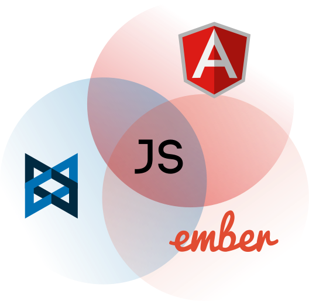
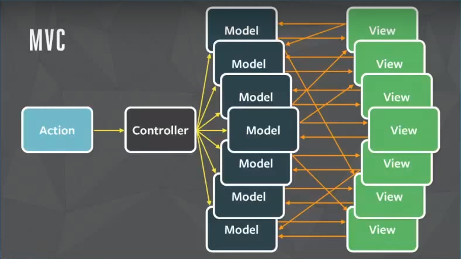
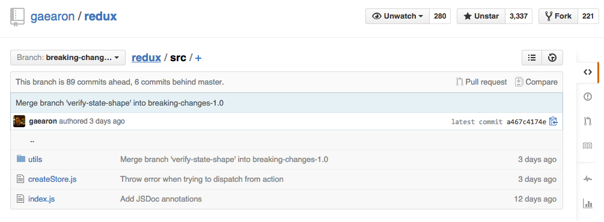

Redux
predictable state container
MVC 有什麼問題？
幾年前開始的 Client Side MVC 大戰
UI move fast
MVC doesn't scale
複雜度超過想像
詳細的可以參考這個影片：
Rethinking Web App Development at Facebook
Managing complexity is the most important technical topic in software development. In my view, it’s so important that Software’s Primary Technical Imperative has to be managing complexity.
軟體首要技術使命是管理複雜度。
– Steve McConnell in Code Complete (most-influential-book-every-programmer-should-read)
處理前端複雜架構的訣竅在於
提高可預測性
這就是 React 的目標
Flux
Unidirectional data flow


Flux 運作方式

Classical Flux 的缺點
- State Mutation
- Impure Reducer
- Singleton Issue
- Boilerplate
Redux
2015/5/30 First commit
原本只是用來準備一個 React EU Conf 的 講題
Live React: Hot Reloading with Time Travel
意外做出最受歡迎的 Flux 架構
所以作者稱為 CDD (Conference Driven Development)
Action
只是個普通的 JS Object
一定要有一個 type
{
type: SEND_MESSAGE,
payload: {
text: 'Hello world'
}
}把資料傳給 Store 的唯一手段
表達修改 State 的意圖
Flux Standard Action
Flux Standard Action 有一個普遍的 action 定義
包括 meta, error 等欄位
Action Creators
通常寫在 XxxxActions 或 XxxxActionCreators 命名的檔案中
小心盡量不要跟 Action 搞混
一個普通的 Action Creator
就是製造 Action 的 Pure Function
function sendMessage(text) {
return {
type: SEND_MESSAGE,
payload: {
text
}
};
}這樣的 Pure Function 很好測試
expect(sendMessage('Hello')).to.deep.equal({
type: SEND_MESSAGE,
payload: {
text: 'Hello'
});
});實際 dispatch Action
// 先不管 dispatch 從哪來
dispatch(sendMessage('Hello'));使用
PromiseMiddleware (redux-promise)
就可以延伸的 ActionCreator 的功能
這邊先不做敘述
Reducer
給 Store 初始的 State
並根據收到的 Action 回傳新的 State
就像是原本的 Store 的一部分工作
(previousState, action) => newState
每次收到 dispatch 的 Action 就會觸發
根據原本的 previousState 和 Action，回傳新的 newState
這樣的 Functional 的做法
可以更簡潔的表達如何變更 State
這是個沒有 Side Effect 的 Function
不要去改 previousState
會使 Time Travel 等需要前面 State 的功能壞掉
const initialState = { message: '' };
function messageReducer(state = initialState, action) {
switch (action.type) {
case SEND_MESSAGE:
return {
message: action.text
};
default:
return state; // 沒有做任何事也要回傳原本的
}
}在一開始的時候 Redux 會 dispatch
@@redux/INIT Action 來初始化 State
@@namespace/EVENT_NAME
是目前 Private Event 的命名規範
不要試圖去聽這些 Event
Store
應用程式保存 State 的地方，Redux 只有一個
建立 Store 的方式是把 reducer 傳進去 createStore
import { createStore } from 'redux';
import messageReducer from '../reducers/messages';
const store = createStore(messageReducer);
實際會有很多不同資料的 reducer
所以需要用 combineReducers 來結合他們
// reducers/index.js
import { combineReducers } from 'redux';
import todos from './todos';
import counter from './counter';
export default combineReducers({
todos,
counter
});
// App.js
import { createStore } from 'redux';
import reducer from './reducers/index';
const store = createStore(reducer);
dispatch
這是比較 Low-level 的 API
不過還是值得一提，dispatch 其實在 store 上面
雖然大部份時候並不會直接這樣寫
store.dispatch(sendMessage('Hello'));
getState
可以取得 store 現在的 state。
store.getState();
Middleware
用來延伸 dispatch 的功能
使用 applyMiddleware util
import { createStore, applyMiddleware } from 'redux';
const store =
applyMiddleware(promise, thunk, observable)(createStore)(reducer);
// applyMiddleware 可以 Decorate createStore
dispatch => dispatch'
讓 dispatch 經過一個個的 Middleware Decorate
const store =
applyMiddleware(promise, thunk, observable)(createStore)(reducer);
// store.dispatch => promise(thunk(observable(store.dispatch)));
redux-thunk 這個 Middleware
讓 Store 可以 dispatch Thunk
function sendMessageAsync(message) {
return dispatch => {
setTimeout(() => {
dispatch(sendMessage(message));
}, 1000);
};
}
redux-promise 這個 middleware
讓 Store 可以 dispatch Promise
function sendMessageAsync(message) {
return dispatch => {
dispatch(new Promise((resolve, reject)) => {
setTimeout(() => {
resolve(sendMessage(message))
}, 1000);
});
};
}
非同步的地方讓 ActionCreator 去做
Reducer 是完全同步的
View
Redux 本身並不依賴特定 View Layer
所以可以跟任何 View Layer 去結合
react-redux 就是 react 跟 redux 的介接
提供兩個東西：
- Provider
- connect
Provider
Provider 用來在 RootComponent 外再包一層
並把 Store 用 React Context 傳下去：
<Provider store={store}>
<MyRootComponent>
</Provider>
connect
connect 用來
把特定的 State 從 Context 裡的 Store Select 出來
把 Event Handler 綁進來
並它們當 props 傳下去：
class MyComponent extends React.Component {
render() {
const { dispatch, user } = this.props;
// connect 沒給第二個參數時 dispatch 會預設當 props 傳下來
//..
}
}
expect default connect(state => ({
user: state.user
}))(MyComponent);
// 也可以用 decorator 的寫法，不過官方不推薦..
@connect(state => ({
user: state.user
}))
expect default class MyComponent extends React.Component {
render() {
const { dispatch, user } = this.props;
//..
}
}
bindActionCreators
Redux 還有一個可以方便去使用 ActionCreator 的 util
把 dispatch 包進去：
import { bindActionCreators } from 'redux';
@connect(state => ({
user: state.user
}))
class MySmartComponent extends React.Component {
render() {
const { dispatch, user } = this.props;
const actions = bindActionCreators(UserActions, dispatch);
return (
{this.props.children}
);
}
}
connect (react-redux v0.8.0)
v0.8.0 的 connect 不需要再寫一個 Component，
只要把要傳怎樣的 props 給搞定，
他會自動幫你包進 Connect Component
function mapStateToProps(state) {
return {
user: state.user
};
}
export default connect(mapStateToProps)(MyDumbComponent)
`connect` 現在有三個可選參數：`mapStateToProps`, `mapDispatchToProps`, `mergeProps`
- mapStateToProps: 跟之前一樣，把 store state 的特定部分當成 props
- mapDispatchToProps: 把 dispatch 傳進去也變成 props，通常用來把 actionCreators 傳下去
- mergeProps: 可以指定 stateProps, dispatchProps, parentProps 的合併方式
預設是這樣：
const defaultMergeProps = (stateProps, dispatchProps, parentProps) => ({
...parentProps,
...stateProps,
...dispatchProps
});
也傳遞包 dispatch 的 actionCreator props 下去：
function mapStateToProps(state) {
return {
user: state.user
};
}
function mapDispatchToProps(dispatch) {
return {
onSendMessage: () => dispatch(sendMessage())
};
}
export default connect(
mapStateToProps,
mapDispatchToProps
)(MyDumbComponent)
最後一個：
function mergeProps(stateProps, dispatchProps, parentProps) {
return {
...stateProps,
...dispatchProps,
...parentProps
}
}
export default connect(
mapStateToProps,
mapDispatchToProps,
mergeProps
)(MyDumbComponent)
這樣就可以讓 parentProps 蓋掉其他兩個
v0.8.0 也可以 bindActionCreators
function mapStateToProps(state) {
return {
user: state.user
};
}
function mapDispatchToProps(dispatch) {
return bindActionCreators(UserActions, dispatch);
}
export default connect(
mapStateToProps,
mapDispatchToProps
)(MyDumbComponent)
Redux 優點
- 所有東西都 Hot Reloadable
- 容易做 Universal，沒用到 Sigleton 而且資料可以 rehydrated
- 可以用任何形式保存資料：JS Objects, Arrays, ImmutableJS..
- 簡化至一個 Store
- 提供 redux-devtools Time travel 功能
- 可以用 Middleware 擴充 dispatch
- 不用 Mock 就很容易測試
而且他的 API 很少，核心只有 createStore 的 150 行程式碼
容易學、好擴充
THE END
Thanks for listening